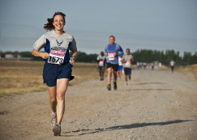

Langages, Frameworks et Logiciels
HTML5/CSS3
Bootstrap
Javascript
jQuery
AngularJs
Gulp
PHP/ MySQL
Symfony 2
Photoshop
Premiere Pro
After Effect
Final Cut Pro X
Ableton Live
Logic Pro X
Cubase
Pro Tools
Projets
Parcours

Centres d'intêret
Si je devais résumer en un mot mes centres d'intêret je dirais "Musique!" pour ne pas dire "guitare, chant, mixage, mastering, synthé, Musique Assistée par Ordinateur". Cependant, je dois avouer que j'arrive malgré tout à m'octroyer un peu de temps libre pour faire du sport, des randonnées ou des excursions. Je vous invite à en découvrir d'avantage sur mes différentes activités et mes projets en cliquant ci-dessous.
Analistik
Chanteur et auteur du groupe Analistik durant 5 ans, j'ai eu le plaisir de partager une aventure humaine et musicale allant jusqu'à la concrétisation d'un album studio. (clip réalisé par Sylvain Jullian et Tommy Zoller)
Nyt
Depuis un peu moins d'un an, entre deux lignes de code, je partage un projet musical avec un ami. Cette expérience allie mon goût pour la musique électronique, la pop et la Musique Assistée par Ordinateur.
Coup de coeur musical du moment
Fadda Freddy : Du groove, de la soul et une performance uniquement vocale. Au delà de cela, cet album est idéal pour commencer une journée avec le sourire.
Footing, foot...
Par tous les temps (ou presque), rien de tel que d'enfiler son short et ses baskets pour aller courir entre amis ou d'organiser des matchs de foot ! En plus, c'est toujours un moment privilégié qui favorise les challenges amicaux.
Randonnées, excursions, camping sauvage...
Quand le temps s'y prête, une bonne balade au bord de mer ou en montagne est une source d'énergie inépuisable.
Vidéo promotionnelle pour le site d' Up To
Image, montage, son et musique originale
en cours de validation